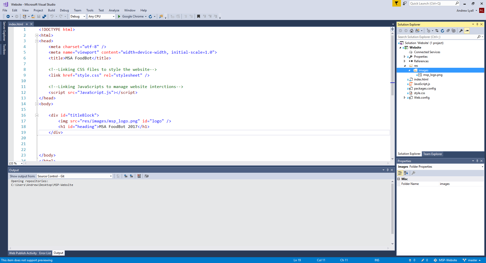

1. Ensure bot is on GitHub
2. Create "Web App" on Azure
3. Select "Deployment Options"
4. Select "GitHub" as source
5. You may need to do the authentification stuff
6. Select your GitHub repo and a branch
7. Show off the continuous deployment
8. Press "ok"
9. Go to https://ngrok.com/downloads
10. Download correct version for you 11. Open bot emulator 12. Click 3 dots on top right
13. "App Settings"
14. Browse
and select the downloaded "ngrok.exe"
15. Copy URL to the Azure web app and add "/api/messages"
16. Try It!
